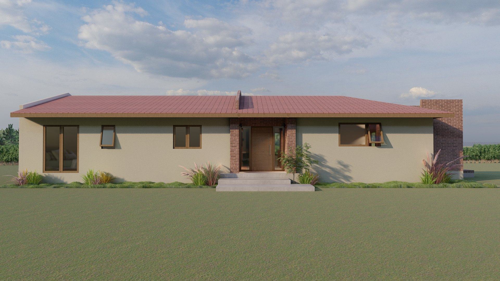
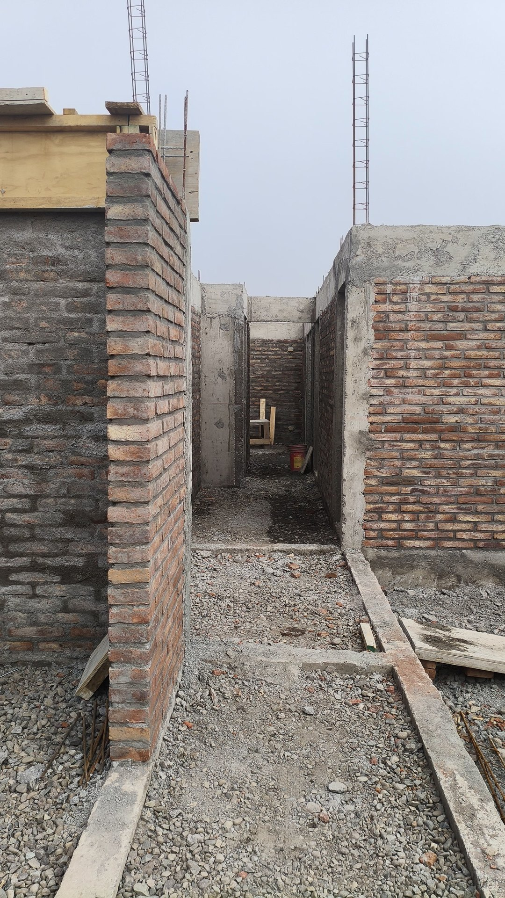
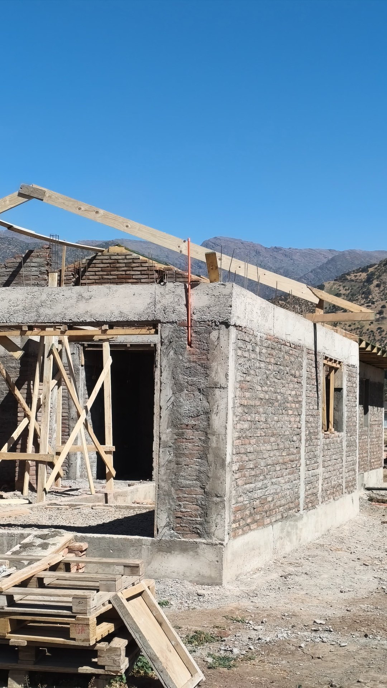
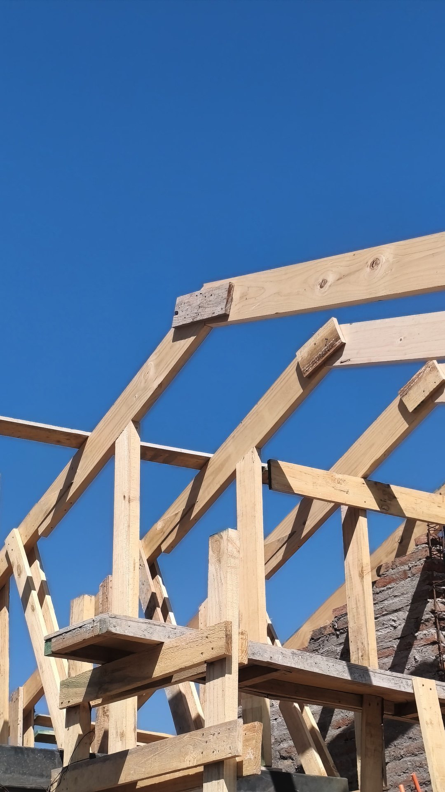
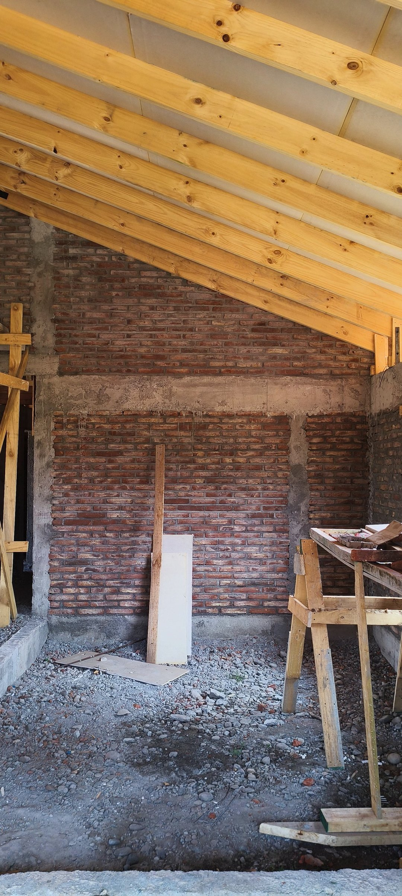
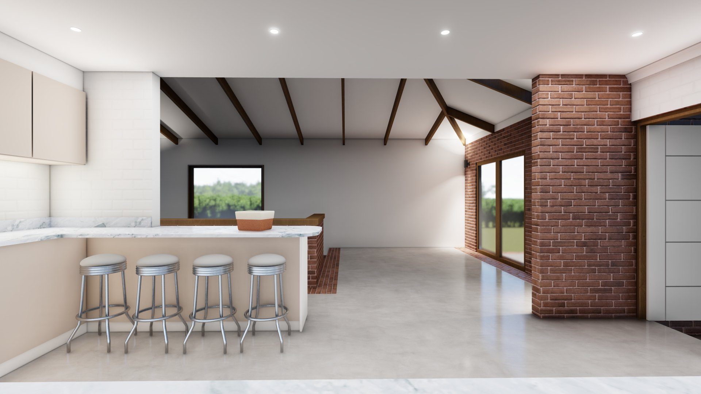

Casa La Colonia · Catemu
Así la
dibujamos.

Render del proyecto · 138 m²




Así la estamos
construyendo.

Render
Obra
· nov 2025
Del render a la obra.
¿Tienes
la parcela?
Conversemos.
Diseño, permiso e inspección de obra hasta la recepción final.
+56 9 5431 7945
averarq.cl